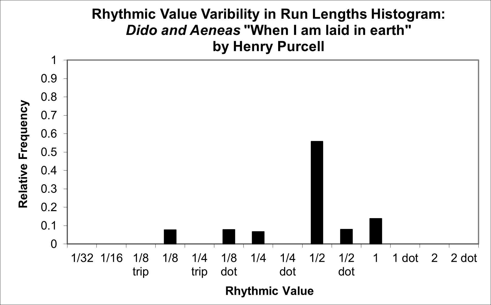
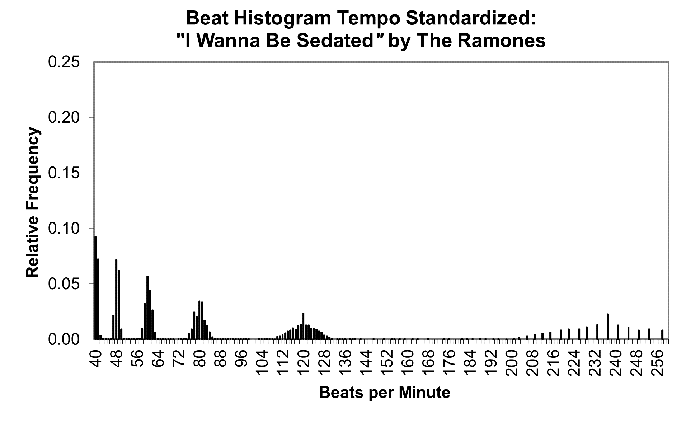

| Feature Explanations: Rhythm |
GENERAL NOTES
Before delving into the details of jSymbolic's rhythm-related features, it should be noted that they are assigned feature codes using a numbering system that divides them into two groups. The R-group features are influenced by neither tempo nor note dynamics, and the RT-group features are influenced by tempo and, sometimes, by dynamics. This division is adopted because, depending on the particular research application and music being studied, it is sometimes useful to have features that take information related to such performance information into account (e.g. if the corpus from which features are to be extracted is meticulously encoded in a way that consistently makes use of tempo and/or dynamics information), and it is sometimes useful to omit this information (e.g. if the corpus holds music drawn from different sources that encoded the music differently, and where the encodings themselves could therefore bias extracted feature values). Sometimes it might be useful to use just the R-group features, sometimes just the RT-group features and sometimes both; the decision is left to the user based on the particular research project they are conducting and the corpus they are using.
The two elementary pieces of information from which most (but not all) jSymbolic rhythmic features are calculated are the times at which notes begin ("note onsets") relative to one another, and the duration with which each note is held. Note onsets can be extracted relatively reliably from audio (as opposed to symbolic) data, at least in cases where note density is not too high, but durations can be more difficult to extract reliably, especially in vertically dense music. In the case of symbolic data, however, both note onsets and durations are easily and precisely available. As one might therefore expect, several of the rhythmic features that are based on note onsets in the jSymbolic catalogue are similar to features that are often used in audio feature extraction systems. Duration-based features, in contrast, are very rarely currently used by audio feature extraction software, but are included in the jSymbolic feature catalogue.
Before proceeding to discuss the details of the jSymbolic rhythmic feature catalogue, it is useful to introduce certain details of how MIDI files encode rhythmic information; these must be considered when designing rhythmic features, whether for jSymbolic or for some other MIDI-compatible software. Time is measured in MIDI files using regular pulses called "ticks." The duration of each quantized quarter note is assigned a set number of ticks, referred to as the "Pulses Per Quarter Note" or "PPQ." The time rate at which ticks go by is set by MIDI tempo meta-events, which in effect control the time duration of each tick (the default MIDI tempo is 120 BPM, if no tempo meta-events specify it explicitly). MIDI tempo is internally specified in terms of "beats per minute" or "BPM," where each beat in MIDI is considered to be a quarter note (regardless of the time signature, which is also encoded); this assumption that the base beat is a quarter note is not embedded in the jSymbolic features themselves, but it is important to be aware of this property of MIDI encodings if one wishes to design new rhythmic features to extract from MIDI files. These tempo meta-events can occur at any point in a MIDI sequence, which means that the tempo can be different at different points in the same MIDI sequence. The PPQ setting, in contrast, remains constant throughout each MIDI sequence. So, the number of ticks associated with a quarter note never changes within a given MIDI sequence, but the time duration of a quarter note will change if a tempo MIDI meta-event changes the time duration of these ticks at one or more points in the MIDI sequence.
One can determine the time duration of a note encoded in MIDI by counting the number of ticks that go by between its MIDI Note On message and its associated MIDI Note Off message, and combining this with the duration of these ticks as set by the tempo in effect at the time that the note is sounding. One can then deduce the rhythmic value (e.g. half note, eighth note, etc.) of a note by counting the ticks between a Note On and the corresponding Note Off, and then comparing this with the PPQ setting.
A disadvantage of encoding music symbolically (relative to audio recordings) is that certain musically important rhythmic information related to performance interpretation can be smoothed out, or is represented in only a very coarse sense. For example, musical scores may indicate that a piece should be played with rubato or with a swing rhythm, but this leaves a great deal unspecified about the ways in which these rhythmic performance characteristics should actually be interpreted. Similarly, many musical traditions have fluid tempi and micro-rhythms that do not fit neatly into standard Western rhythmic note value notation. Such issues are not necessarily problematic when musicians read scores, as they have learned knowledge and creative insight that can be capitalized on when performing the music, but such benefits are not available in the context of feature extraction, where software has nothing but the symbolic files it is given to base extracted feature values on, and features need to be designed in a way that makes extraction consistent across all music they are extracted from.
One essential advantage (and disadvantage, as we shall see) of MIDI over most other established symbolic file formats is that it can represent relatively precise note start and end timings, and many live-recorded MIDI performances do indeed take advantage of this; rhythmic subtleties can thus be presented much more precisely in MIDI than in alternative formats like MusicXML, MEI, Humdrum **kern and so on. However, MIDI files generated using score editing software (as opposed to live MIDI performance capture) are often strictly quantized rhythmically, which means that precise timing information may not be available, or may be encoded inconsistently by different software. Conversely, sometimes one might prefer for music theoretical reasons that performance interpretation timing information be filtered out for the purpose of analysis (including some feature extraction), in which case non-quantized rhythms must be properly quantized in order to be compared and analyzed consistently. In most cases, therefore, it is essential that studies be carried out using symbolic music files that encode rhythm in a way that is either consistently quantized or consistently not quantized, as appropriate for the given study.
Keeping all this in mind, it is important to be aware that certain score editing software offers the the option of encoding MIDI files using some form of "expressive" or "human" playback settings, meaning that some artificial rhythmic variance will be introduced by the score editing software to make the MIDI files it saves sound more sound less robotic when sonified, with the consequence that notes will not be strictly quantized rhythmically. It is generally strongly recommended that such settings be turned off when encoding MIDI files for feature extraction, since the information they generate is reflective neither of the quantized way that the music is likely encoded in the original score, nor of how a real human performer would actually interpret it.
In any case, jSymbolic processing allows features associated with both quantized and non-quantized rhythms to be extracted, as suits a given musical task's needs. Related to this, several of the rhythm features described below are based on various histograms. These histograms are used partly to statistically smooth over inconsistencies due to varied rhythm encoding approaches, and partly simply because such histograms can yield useful features in general. As is the case with other types of features, histograms can provide a useful starting point for constructing features based on rhythm, both directly as feature vectors themselves and as intermediate representations for calculating derivative features (please consult the section of the manual on overall pitch statistics for a brief general introduction to histograms).
The first rhythm-related histogram generated by jSymbolic, which focuses on note durations rather than note onsets, is called the rhythmic value histogram. It is is a normalized histogram where the value of each bin indicates the fraction of all notes in the music with a quantized rhythmic value corresponding to that of the given bin. The bins are ordered as follows: thirty second notes (or shorter) [0], sixteenth notes [1], eighth note triplets [2], eighth notes [3], quarter note triplets [4], dotted eighth notes [5], quarter notes [6], dotted quarter notes [7], half notes [8], dotted half notes [9], whole notes [10], dotted whole notes [11], double whole notes [12], and dotted double whole notes (or longer) [13]. Both pitched and unpitched notes are included in this histogram. Tempo is, of course, not relevant to this histogram, nor are dynamics, voice nor instrumentation. Notes with durations not precisely matching one of these rhythmic note values are mapped to the closest note value (to filter out the effects of rubato or uneven human rhythmic performance capture, for example, or at least to an extent, as we will soon see). The two figures below show the rhythmic value histograms for two Baroque pieces, a movement from a J. S. Bach cello suite and a Purcell aria:
It can be seen that almost all notes in the Bach are sixteenth notes, with just a few whole notes (three, at the very end, if one examines the score). The Purcell aria consists of mostly half notes and, to a lesser extent, whole notes, with a few other rhythmic values occurring much less frequently. These kinds of histograms can encapsulate not only what kinds of rhythmic values are found in the music under consideration, but also how much rhythmic variety there is, for example. It is also notable that these two histograms contain a little bit of low-level noise, because they were encoded from score editors with expressive playback settings enabled. This is why, for example, the Bach histogram indicates that 0.15% of notes are eighth notes and another 0.15% are dotted eighth notes, when in reality neither are present at all in the score (these numbers are small enough to be difficult to see in the graph, but are evident in the raw feature values). This illustrates why one should ideally turn off such settings in score editors, and make sure that rhythm is encoded in a consistent way, as the failure to properly quantize rhythm for these histograms can result in such noise being introduced in feature values. Although it is fortunately unlikely that small amounts of noise like the 0.3% cumulative error observed here will significantly impact statistical or machine learning results, it is still better to avoid such error when possible by using consistently encoded music. This is especially true with music that has short fast notes (like the sixteenth notes in the Bach), where small variations in when notes start and end are closer in scale to the amount of time that the notes are held, and are thus more likely to fall into the wrong rhythmic value histogram bin when jSymbolic performs quantization.
jSymbolic also generates two additional histograms based on quantized rhythmic note values, starting with the rhythmic value median run lengths histogram. It has fourteen bins corresponding to the same rhythmic values of the rhythmic value histogram, but instead of being based on the prevalence of these rhythmic values found overall, it is concerned with how long runs of the same rhythmic note value tend to be (found separately for each voice, both horizontally and, for polyphonic instruments, vertically). For example, eight quarter notes in a row in the same voice would represent a rhythmic quarter note run of 8 (and would contribute to the calculation of the quarter note bin of the rhythmic value median run lengths histogram). Four quarter notes followed by a half note followed by two quarter notes would, on the other hand, correspond to a quarter note run of four, a quarter note run of 2 and a half note run of one. All such runs are aggregated together for each rhythmic value and the median run length is found for each rhythmic value. The bins of the histogram are then set to the median run length value for each bin's corresponding rhythmic value, and the bins are then normalized. This normalization means that the value for each bin no longer represents the actual absolute median run length for each bin's rhythmic value, but rather shows how long the run median lengths are for each rhythmic value relative to each other rhythmic value (this normalization facilitates comparison of different music for the purposes of statistical analysis and machine learning). The two graphs below show the rhythmic value median run lengths histograms for the same Bach and Purcell pieces introduced above:
As one would expect, the new Bach histogram gives us no useful new information relative to the original Rhythmic Value Histogram, since the piece consists entirely of uninterrupted sixteenth notes, except for the final three-note chord in whole notes; the ratios between run lengths is essentially the same as the ratios between rhythmic values in this special case. The rhythmic value median run lengths histogram for Purcell is quite different from the original rhythmic value histogram, however, as is much more typical, since there is more rhythmic variety. It can be seen, for example, that uninterrupted groups of half notes are roughly twice as common as uninterrupted groups of any other rhythmic values, and that (unlike the Bach) there are no very long prolonged groups of any rhythmic value (because, in the case of this particular piece, rhythmic values tends to change quite frequently). An additional notable point is that the bin for sixteenth notes is prominent on this graph, while it was almost absent in the the rhythmic value histogram (just 0.11% or rhythmic values). This is of particular significance in this case because there are not in fact any sixteenth notes in the Purcell; sixteenth notes are falsely indicated because of the unquantized way in which this particular MIDI file was encoded, as noted above. Such noise is more evident in this particular histogram because the bin values indicate not the proportion of notes but the sequence of rhythmically like notes, which makes this kind of histogram more sensitive to noise when there are generally few long runs of the same rhythmic value (which is the case in the Purcell, but not in the Bach, which is why the noise in the Bach histogram maintains a low amplitude). This is another good reminder of the need to ensure that the music being analyzed was encoded using consistent rhythmic quantization (when appropriate).
jSymbolic also generates a rhythmic value variability in run lengths histogram, which is very similar to the rhythmic value median run lengths histogram, except that each bin indicates the (normalized) standard deviation of run lengths for that bin's corresponding rhythmic value, rather than the (normalized) median run length. This provides a measure of how much run lengths vary for that rhythmic value; for example, if a given rhythmic value sometimes has runs of just a few notes but other times has much longer runs, this would correspond to a high standard deviation, whereas if the runs lengths for that rhythmic value are usually the same (even with the same median, for example), then the standard deviation would be low. The rhythmic value variability in run lengths histogram for the same Purcell piece is shown below:

Note here that the (normalized) bin magnitude for half notes stands out much more, as this is where the most variability in run lengths is. It is also notable the the sixteenth note noise disappears, since the single sixteenth note (falsely) detected only occurs once, so there is no variability, hence its bin has a value of 0.
An entirely different type of rhythm-related histogram generated by jSymbolic is the beat histogram, which focuses on note onsets rather than the durations used to calculate the rhythmic value histograms described above. Beat histograms are an approach that was first applied to MIR research by Brown (1993), and was later publicized and used for automatic genre classification by Tzanetakis and his colleagues in a number of papers (Tzanetakis, Essl & Cook 2001; Tzanetakis & Cook 2002; Tzanetakis 2002). Unlike the other types of rhythm-related histograms discussed above, beat histograms can work very well with music where rhythm is not quantized, and are thus particularly suitable for music that was encoded as MIDI using live performance capture, and for musical traditions and styles where strictly quantized rhythm is inappropriate. Beat histograms are also perfectly suitable for extracting information from music that is in fact rhythmically quantized, as long as the encoding follows a consistent approach across musical pieces (to avoid encoding bias when comparing features across pieces).
It is necessary to have some understanding of how "autocorrelation" works in order to understand how beat histograms are constructed. Autocorrelation essentially involves comparing a signal with versions of itself delayed by successive intervals. This technique is often used to find repeating patterns in signals of any kind, as it yields the relative strengths of different periodicities within a signal. In terms of musical data, autocorrelation allows one to find the relative strengths of different rhythmic pulses. jSymbolic constructs its beat histograms by processing sequences of MIDI Note On events (i.e. note onsets), with MIDI ticks comprising the time scale. The value of each Note On is weighted by its MIDI velocity (i.e. the strength of its attack) in order to ensure that periodicities are weighted based on the strength with which notes are played (if no MIDI velocity variation is encoded, then all attacks are equally weighted). The values of lag correspond to both rhythmic periodicities as well as, after processing, the bin labels of the beat histogram, and the autocorrelation values provide the magnitude value for each bin. Calculations use the overall average tempo of the piece, in order to emphasize the metrical notation of the music, and do thus do not take into account tempo variations in the piece due to the potential presence of multiple tempo MIDI meta-events.
Once the histogram is populated using all permitted values of lag for a given MIDI sequence, jSymbolic then downsamples and transforms it so that each bin corresponds to a rhythmic periodicity with units of beats per minute. The histogram is then normalized so that different MIDI sequences can be compared. The end result is a histogram whose bins correspond to rhythmic pulses with units of beats per minute and whose bin magnitudes indicate the relative strength of each corresponding rhythmic pulse. In effect, a beat histogram portrays the relative strength of different beats and sub-beats within a piece.
Consider, for example, the beat histograms extracted from MIDI representations of "I Wanna Be Sedated," by the punk band The Ramones, and "’Round Midnight," by the jazz performer and composer Thelonious Monk, as shown below. It is clear that "I Wanna Be Sedated" has significant rhythmic looseness, as demonstrated by the spread around each peak, each of which represents a strong beat periodicity. "I Wanna Be Sedated" has several clear strong beats, including ones centered around 55, 66, 82, 111 and 165 (the actual tempo of the encoding) BPM. Note the rhythmic multiples here (as one would expect): for example, 82 BPM is about half of 165 BPM, 55 BPM is a third of 165 BPM and 111 BPM is about double 55 BPM. "’Round Midnight," in contrast, has one very strong beat at 76 beats per minute, the actual tempo of the encoding, and a wide range of much lower-level beat strengths. This suggests that, as might be expected, "’Round Midnight" is more rhythmically complex and is also encoded with a tighter rhythm.
This type of information can be helpfully representative of different musical classes, such as genre. Techno, for example, often has very clearly defined beats, without any surrounding spread, because the beats are precisely generated electronically. A live performance capture of a Chopin nocturne, complete with rubato, to provide a contrasting example, would be expected to have much less clearly defined beats.
The kind of beat histogram discussed above can be very revealing, but it is very much influenced by the tempo of the music it is being calculated from. This can be desirable, as tempo is an important part of music, and it is useful to have features that encapsulate information about it. However, some music has an ambiguous tempo (e.g. music drawn from Renaissance manuscripts), with the result that tempo may be chosen arbitrarily for any given MIDI encoding, which can introduce statistical noise if not encoded consistently. Also, it can be useful generally to also have information about beat periodicities that is independent of tempo, as this can allow other kinds of patterns between music being studied to become evident. jSymbolic therefore includes not only a tempo standardized version of the beat histogram (the beat histogram tempo standardized), but also tempo-standardized versions of all the features derived from the beat histogram. This new tempo standardized histogram, and all the features derived from it, are extracted only after pre-processing has been applied where the tempo of all music is changed to 120 BPM. The resulting beat histogram tempo standardized can thus be compared across pieces in a way that is tempo-invariant. The figure below shows the beat histogram tempo standardized for the same Ramones song introduced above; note how the same periodicities are present, but the main beat is centered at the (transformed) tempo of 120 BPM rather than the original "true" tempo of 165 BPM, and the other rhythmic peaks are scaled correspondingly (and a spread around the beat harmonic of 240 BPM is now visible, which was not visible on the original beat histogram, since double the original tempo of 165 BPM is 330 BPM, which is outside the beat histogram scale).

JSYMBOLIC FEATURE CATALOGUE (RHYTHM SECTION)
The jSymbolic feature catalogue includes the following rhythm-related features that are not influenced by tempo, and that are also (unless noted) not influenced by note dynamics:
- R-1 Initial Time Signature: A feature vector consisting of two values. The first is the numerator of the first specified time signature in the piece, and the second is the denominator of the same time signature. Set to 4/4 if no time signature is specified.
- R-2 Simple Initial Meter: Set to 1 if the initial meter is a standard simple meter (i.e. if the numerator of the time signature is 2, 3 or 4) and to 0 otherwise.
- R-3 Compound Initial Meter: Set to 1 if the initial meter is a standard compound meter (i.e. if the numerator of the time signature is 6, 9, 12, 15, 18 or 24) and to 0 otherwise.
- R-4 Complex Initial Meter: Set to 1 if the initial meter is a standard complex meter (i.e. if the numerator of the time signature is 5, 7, 9, 11, 13, 15, 22 or 25) and to 0 otherwise.
- R-5 Duple Initial Meter: Set to 1 if the initial meter is a standard simple or compound duple meter (i.e. if the numerator of the time signature is 2 or 6) and to 0 otherwise.
- R-6 Triple Initial Meter: Set to 1 if the initial meter is a standard simple or compound triple meter (i.e. if the numerator of the time signature is 3 or 9) and to 0 otherwise.
- R-7 Quadruple Initial Meter: Set to 1 if the initial meter is a standard simple or compound quadruple meter (i.e. if the numerator of the time signature is 4 or 12) and to 0 otherwise.
- R-8 Metrical Diversity: The number of different (unique) time signatures found in the piece. Set to 1 if no time signature is specified.
- R-9 Duration in Quarter Notes: Total duration (in quarter note beats) of the piece.
- R-10 Total Number of Notes: Total number of notes, including both pitched and unpitched notes.
- R-11 Note Density per Quarter Note: Average number of note onsets per unit of time corresponding to an idealized quarter note. Takes into account all notes in all voices, including both pitched and unpitched notes.
- R-12 Note Density per Quarter Note per Voice: Average number of note onsets per unit of time corresponding to an idealized quarter note, divided by the total number of voices present (i.e. the number of MIDI channels that contain one or more notes in the piece). Takes into account all notes in all voices, including both pitched and unpitched notes.
- R-13 Note Density per Quarter Note Variability: How much the note density per quarter note (average number of notes per idealized quarter note duration) varies throughout the piece. Takes into account all notes in all voices, including both pitched and unpitched notes. In order to calculate this, the piece is broken into windows of 8 quarter note duration, and the note density of each window is calculated. A note sounding across a window boundary will be included in each of the windows. The final value of this feature is then found by calculating the standard deviation of the note densities of these windows. Set to 0 if there is insufficient music for more than one window.
- R-14 Rhythmic Value Histogram: A feature vector, as described above, representing a normalized histogram where the value of each bin specifies the fraction of all notes in the music with a rhythmic value corresponding to that of the given bin. The bins are numbered as follows: thirty second notes (or less) [0], sixteenth notes [1], eighth note triplets [2], eighth notes [3], quarter note triplets [4], dotted eighth notes [5], quarter notes [6], dotted quarter notes [7], half notes [8], dotted half notes [9], whole notes [10], dotted whole notes [11], double whole notes [12], and dotted double whole notes (or more) [13]. Both pitched and unpitched notes are included in this histogram. Tempo is, of course, not relevant to this histogram. Notes with durations not precisely matching one of these rhythmic note values are mapped to the closest note value (to filter out the effects of rubato or uneven human rhythmic performances, for example). This histogram is calculated without regard to the dynamics, voice or instrument of any given note.
- R-15 Range of Rhythmic Values: A measure of the difference between the shortest rhythmic values and the longest rhythmic values in the music. Measured in number of bins in the Rhythmic Value Histogram separating the first (i.e. the one with the shortest rhythmic value) non-zero bin and the last (i.e. the one with the longest rhythmic value) non-zero bin.
- R-16: Number of Different Rhythmic Values Present: Number of different quantized rhythmic values (e.g. quarter notes, dotted quarter notes, half notes, etc.) that occur at least once in the music. This is found by finding all non-zero entries in the Rhythmic Value Histogram.
- R-17: Number of Common Rhythmic Values Present: Number of different quantized rhythmic values (e.g. quarter notes, dotted quarter notes, half notes, etc.) that represent at least 15% of the rhythmic values in the music. This is found by examining the Rhythmic Value Histogram.
- R-18 Prevalence of Very Short Rhythmic Values: Fraction of all notes in the music that have a quantized rhythmic value less than an eighth note. This includes both pitched and unpitched notes, is calculated after rhythmic quantization, is not influenced by tempo, and is calculated without regard to the dynamics, voice or instrument of any given note.
- R-19 Prevalence of Short Rhythmic Values: Fraction of all notes in the music that have a quantized rhythmic value less than a dotted eighth note. This includes both pitched and unpitched notes, is calculated after rhythmic quantization, is not influenced by tempo, and is calculated without regard to the dynamics, voice or instrument of any given note.
- R-20 Prevalence of Medium Rhythmic Values: Fraction of all notes in the music that have a quantized rhythmic value between an eighth note and a half note (inclusive). This includes both pitched and unpitched notes, is calculated after rhythmic quantization, is not influenced by tempo, and is calculated without regard to the dynamics, voice or instrument of any given note.
- R-21 Prevalence of Long Rhythmic Values: Fraction of all notes in the music that have a quantized rhythmic value greater than a dotted quarter note. This includes both pitched and unpitched notes, is calculated after rhythmic quantization, is not influenced by tempo, and is calculated without regard to the dynamics, voice or instrument of any given note.
- R-22 Prevalence of Very Long Rhythmic Values: Fraction of all notes in the music that have a quantized rhythmic value greater than a whole note. This includes both pitched and unpitched notes, is calculated after rhythmic quantization, is not influenced by tempo, and is calculated without regard to the dynamics, voice or instrument of any given note.
- R-23 Prevalence of Dotted Notes: Fraction of all notes in the music that have a quantized rhythmic value consisting of a dotted eighth note, dotted quarter note, dotted half note, dotted whole note or dotted double whole note. This includes both pitched and unpitched notes, is calculated after rhythmic quantization, is not influenced by tempo, and is calculated without regard to the dynamics, voice or instrument of any given note.
- R-24 Shortest Rhythmic Value: Rhythmic value of the shortest note in the piece, expressed as a fraction of a quarter note. For example, a value of 0.5 indicates that the shortest note is an eighth note. This calculation includes both pitched and unpitched notes, is calculated after rhythmic quantization, is not influenced by tempo, and is calculated without regard to the dynamics, voice or instrument of any given note.
- R-25 Longest Rhythmic Value: Rhythmic value of the longest note in the piece, expressed as a fraction of a quarter note. For example, a value of 2 indicates that the longest note is a half note. This calculation includes both pitched and unpitched notes, is calculated after rhythmic quantization, is not influenced by tempo, and is calculated without regard to the dynamics, voice or instrument of any given note.
- R-26 Mean Rhythmic Value: The mean rhythmic value of the music, in quarter note units. For example, a Mean Rhythmic Value of 0.5 would mean that the duration of an eighth note corresponds to the mean average rhythmic value in the music. This calculation includes both pitched and unpitched notes, is calculated after rhythmic quantization, is not influenced by tempo, and is calculated without regard to the dynamics, voice or instrument of any given note.
- R-27 Most Common Rhythmic Value: The most common rhythmic value of the music, in quarter note units. So, for example, a Most Common Rhythmic Value of 0.5 would mean that eighth notes occur more frequently than any other rhythmic value. This calculation includes both pitched and unpitched notes, is calculated after rhythmic quantization, is not influenced by tempo, and is calculated without regard to the dynamics, voice or instrument of any given note.
- R-28 Prevalence of Most Common Rhythmic Value: The fraction of all notes that have a rhythmic value corresponding to the most common rhythmic value in the music. This calculation includes both pitched and unpitched notes, is calculated after rhythmic quantization, is not influenced by tempo, and is calculated without regard to the dynamics, voice or instrument of any given note.
- R-29 Relative Prevalence of Most Common Rhythmic Values: Relative frequency of the of the second most common rhythmic value in the piece, divided by the relative frequency of the most common rhythmic value. This calculation includes both pitched and unpitched notes, is calculated after rhythmic quantization, is not influenced by tempo, and is calculated without regard to the dynamics, voice or instrument of any given note.
- R-30 Difference Between Most Common Rhythmic Values: A measure of the difference between the two most common rhythmic values in the music. Measured in number of bins in the Rhythmic Value Histogram separating the two most common rhythmic values.
- R-31 Rhythmic Value Variability: Standard deviation of the note durations in quarter notes of all notes in the music. Provides a measure of how close the rhythmic values are to the mean rhythmic value. This calculation includes both pitched and unpitched notes, is calculated after rhythmic quantization, is not influenced by tempo, and is calculated without regard to the dynamics, voice or instrument of any given note.
- R-32 Rhythmic Value Skewness: Skewness of the note durations in quarter notes of all notes in the music. Provides a measure of how asymmetrical the distribution is: a value of zero indicates a symmetrical distribution, a negative value indicates a left skew and a positive value indicates a right skew. This calculation includes both pitched and unpitched notes, is calculated after rhythmic quantization, is not influenced by tempo, and is calculated without regard to the dynamics, voice or instrument of any given note.
- R-33 Rhythmic Value Kurtosis: Excess kurtosis of the note durations in quarter notes of all notes in the music. A higher kurtosis means that the tails are fatter and a lower kurtosis means that they are skinnier. A normal distribution has a value of 0. A distribution with a higher kurtosis is more likely to have extreme values. This calculation includes both pitched and unpitched notes, is calculated after rhythmic quantization, is not influenced by tempo, and is calculated without regard to the dynamics, voice or instrument of any given note.
- R-34 Rhythmic Value Median Run Lengths Histogram: A normalized feature vector that indicates, for each rhythmic value, the normalized median number of times that notes with that rhythmic value occur consecutively (either vertically or horizontally) in the same voice (MIDI channel and track). Each bin corresponds to a different rhythmic value, and they are numbered as follows: thirty second notes (or less) [0], sixteenth notes [1], eighth note triplets [2], eighth notes [3], quarter note triplets [4], dotted eighth notes [5], quarter notes [6], dotted quarter notes [7], half notes [8], dotted half notes [9], whole notes [10], dotted whole notes [11], double whole notes [12], and dotted double whole notes (or more) [13]. Both pitched and unpitched notes are included in this histogram. Tempo is, of course, not relevant to this histogram. Notes with durations not precisely matching one of these rhythmic note values are mapped to the closest note value (to filter out the effects of rubato or uneven human rhythmic performances, for example). This histogram is calculated without regard to dynamics.
- R-35 Mean Rhythmic Value Run Length: Mean number of notes of the same rhythmic value that occur consecutively (either vertically or horizontally) in the same voice (MIDI channel and track). This calculation includes both pitched and unpitched notes, is calculated after rhythmic quantization and not influenced by neither tempo nor dynamics.
- R-36 Median Rhythmic Value Run Length: Median number of notes of the same rhythmic value that occur consecutively (either vertically or horizontally) in the same voice (MIDI channel and track). This calculation includes both pitched and unpitched notes, is calculated after rhythmic quantization and not influenced by neither tempo nor dynamics.
- R-37 Variability in Rhythmic Value Run Lengths: Standard deviation of the numbers of notes of the same rhythmic value that occur consecutively (either vertically or horizontally) in the same voice (MIDI channel and track). This calculation includes both pitched and unpitched notes, is calculated after rhythmic quantization and not influenced by neither tempo nor dynamics.
- R-38 Rhythmic Value Variability in Run Lengths Histogram: A normalized feature vector that indicates, for each rhythmic value, the normalized standard deviation of the number of times that notes with that rhythmic value occur consecutively (either vertically or horizontally) in the same voice (MIDI channel and track). Each bin corresponds to a different rhythmic value, and they are numbered as follows: thirty second notes (or less) [0], sixteenth notes [1], eighth notes [2], dotted eighth notes [3], quarter notes [4], dotted quarter notes [5], half notes [6], dotted half notes [7], whole notes [8], dotted whole notes [9], double whole notes [10] and dotted double whole notes (or more ) [11]. Both pitched and unpitched notes are included in this histogram. Tempo is, of course, not relevant to this histogram. Notes with durations not precisely matching one of these rhythmic note values are mapped to the closest note value (to filter out the effects of rubato or uneven human rhythmic performances, for example). This histogram is calculated without regard to dynamics.
- R-39 Mean Rhythmic Value Offset: Mean offset in duration of notes from the idealized durations of each of their nearest quantized rhythmic values, expressed as a fraction of the duration of an idealized quantized quarter note. Offsets are treated as absolute values, so offsets that are longer or shorter than each idealized duration are both treated as identical positive numbers in this calculation. This feature provides an indication of how consistently quantized note durations are or, expressed slightly differently, how well they conform to idealized note durations. Higher values indicate greater average deviation from idealized note durations. Both pitched and unpitched notes are included, and this is calculated without regard to the dynamics, voice or instrument of any given note.
- R-40 Median Rhythmic Value Offset: Median offset in duration of notes from the idealized durations of each of their nearest quantized rhythmic values, expressed as a fraction of the duration of an idealized quantized quarter note. Offsets are treated as absolute values, so offsets that are longer or shorter than each idealized duration are both treated as identical positive numbers in this calculation. This feature provides an indication of how consistently quantized note durations are or, expressed slightly differently, how well they conform to idealized note durations. Higher values indicate greater average deviation from idealized note durations. Both pitched and unpitched notes are included, and this is calculated without regard to the dynamics, voice or instrument of any given note.
- R-41 Variability of Rhythmic Value Offsets: Standard deviation of the offsets of note durations of notes from the idealized durations of each of their nearest quantized rhythmic values, expressed as a fraction of the duration of an idealized quantized quarter note. Offsets are treated as absolute values, so offsets that are longer or shorter than each idealized duration are both treated as identical positive numbers in this calculation. This feature provides an indication of how much these offsets vary or, expressed slightly differently, how rhythmically consistent note durations are. A higher value indicates greater variety in offsets between different notes. Both pitched and unpitched notes are included, and this is calculated without regard to the dynamics, voice or instrument of any given note.
- R-42 Complete Rests Fraction: Fraction of the music during which no pitched notes are sounding on any MIDI channel. Non-pitched (MIDI channel 10) notes are not considered in this calculation.
- R-43 Partial Rests Fraction: Fraction of the music during which no note is sounding on at least one active MIDI channel. Non-pitched (MIDI channel 10) notes ARE considered in this calculation. Only channels containing at least one note are counted in this calculation.
- R-44 Average Rest Fraction Across Voices: Fraction of the duration of each MIDI channel during which no note is sounding on that channel, averaged across all channels that contain at least one note. Non-pitched (MIDI channel 10) notes ARE considered in this calculation.
- R-45 Longest Complete Rest: Longest amount of uninterrupted time (expressed as a fraction of the duration of a quarter note) in which no pitched notes are sounding on any MIDI channel. Non-pitched (MIDI channel 10) notes are not considered in this calculation. Rests shorter than 0.1 of a quarter note are ignored in this calculation.
- R-46 Longest Partial Rest: Longest amount of uninterrupted time (expressed as a fraction of the duration of a quarter note) in which no notes are sounding on at least one active MIDI channel. Non-pitched (MIDI channel 10) notes ARE considered in this calculation. Only channels containing at least one note are counted in this calculation. Rests shorter than 0.1 of a quarter note are ignored in this calculation.
- R-47 Mean Complete Rest Duration: Mean duration of complete rests in the piece, expressed as a fraction of the duration of a quarter note. A complete rest is defined as a period in which no pitched notes are sounding on any MIDI channel. Non-pitched (MIDI channel 10) notes are not considered in this calculation. Rests shorter than 0.1 of a quarter note are ignored in this calculation.
- R-48 Mean Partial Rest Duration: Mean duration of rests in the piece, expressed as a fraction of the duration of a quarter note. This is calculated voice-by-voice, where each rest included in the calculation corresponds to a rest in one MIDI channel, regardless of what may or may not be happening simultaneously in any other MIDI channels. Non-pitched (MIDI channel 10) notes ARE considered in this calculation. Only channels containing at least one note are counted in this calculation. Rests shorter than 0.1 of a quarter note are ignored in this calculation.
- R-49 Median Complete Rest Duration: Median duration of complete rests in the piece, expressed as a fraction of the duration of a quarter note. A complete rest is defined as a period in which no pitched notes are sounding on any MIDI channel. Non-pitched (MIDI channel 10) notes are not considered in this calculation. Rests shorter than 0.1 of a quarter note are ignored in this calculation.
- R-50 Median Partial Rest Duration: Median duration of rests in the piece, expressed as a fraction of the duration of a quarter note. This is calculated voice-by-voice, where each rest included in the calculation corresponds to a rest in one MIDI channel, regardless of what may or may not be happening simultaneously in any other MIDI channels. Non-pitched (MIDI channel 10) notes ARE considered in this calculation. Only channels containing at least one note are counted in this calculation. Rests shorter than 0.1 of a quarter note are ignored in this calculation.
- R-51 Variability of Complete Rest Durations: Standard deviation of the durations of all complete rests in the piece, expressed as a fraction of the duration of a quarter note. A complete rest is defined as a period in which no pitched notes are sounding on any MIDI channel. Non-pitched (MIDI channel 10) notes are not considered in this calculation. Rests shorter than 0.1 of a quarter note are ignored in this calculation.
- R-52 Variability of Partial Rest Durations: Standard deviation of the durations of rests in the piece, expressed as a fraction of the duration of a quarter note. This is calculated voice-by-voice, where each rest included in the calculation corresponds to a rest in one MIDI channel, regardless of what may or may not be happening simultaneously in any other MIDI channels. Non-pitched (MIDI channel 10) notes ARE considered in this calculation. Only channels containing at least one note are counted in this calculation. Rests shorter than 0.1 of a quarter note are ignored in this calculation.
- R-53 Variability Across Voices of Combined Rests: Standard deviation of the total amount of time (expressed as a fraction of the duration of a quarter note) per active MIDI channel in which no notes are sounding in that channel. Only channels containing at least one note are counted in this calculation. Non-pitched (MIDI channel 10) notes ARE considered in this calculation.
- R-54 Beat Histogram Tempo Standardized: A feature vector consisting of the bin magnitudes of the autocorrelation-based beat histogram described in the jSymbolic manual, but with the music mapped to a standardized overall tempo of 120 BPM before this histogram is calculated. This means that tempo-independent beat histograms of different pieces can be compared in a way that is independent of potential tempo differences between the pieces. Any variations in tempo are ignored, so for the purposes of this feature the tempo is consistently 120 BPM throughout the music. Rubato-related aspects encapsulated in note onsets do still influence the tempo-independent beat histogram, however. Each bin corresponds to a different (virtual) beats per minute periodicity, with periodicity tempo increasing by 1 BPM with each bin index. The first bin corresponds to (a virtual) 40 BPM (lower BPM values are not included, as they tend to be too noisy), and the last bin corresponds to (a virtual) 260 BPM. The magnitude of each bin is proportional to the cumulative loudness (MIDI velocity) of all the notes that occur at that bin's (virtual) rhythmic periodicity. The histogram is normalized.
- R-55 Range of Rhythmic Pulses – Tempo Standardized: Number of tempo-standardized beat histogram bins spanning the first non-zero tempo-standardized beat histogram bin and the last non-zero tempo-standardized beat histogram bin.
- R-56 Number of Rhythmic Pulses – Tempo Standardized: Number of non-zero tempo-standardized beat histogram bins.
- R-57 Number of Strong Rhythmic Pulses – Tempo Standardized: Number of tempo-standardized beat histogram peaks with normalized magnitudes over 0.1.
- R-58 Number of Moderate Rhythmic Pulses – Tempo Standardized: Number of tempo-standardized beat histogram peaks with normalized magnitudes over 0.01.
- R-59 Number of Relatively Strong Rhythmic Pulses – Tempo Standardized: Number of tempo-standardized beat histogram peaks with magnitudes at least 30% as high as the magnitude of the tempo-standardized beat histogram peak with the highest magnitude.
- R-60 Prevalence of Slower Rhythmic Pulses – Tempo Standardized: Fraction of the tempo-standardized beat periodicities contained in the first third of the tempo-standardized beat histogram.
- R-61 Prevalence of Mid-Tempo Rhythmic Pulses – Tempo Standardized: Fraction of the tempo-standardized beat periodicities contained in the middle third of the tempo-standardized beat histogram.
- R-62 Prevalence of Faster Rhythmic Pulses – Tempo Standardized: Fraction of the tempo-standardized beat periodicities contained in the last third of the tempo-standardized beat histogram.
- R-63 Mean Rhythmic Pulse – Tempo Standardized: Mean tempo-standardized beat periodicity, as averaged across the tempo-standardized beat histogram.
- R-64 Median Rhythmic Pulse – Tempo Standardized: Median tempo-standardized beat periodicity, as averaged across the tempo-standardized beat histogram.
- R-65 Strongest Rhythmic Pulse – Tempo Standardized: Bin index of the tempo-standardized beat histogram bin with the highest magnitude.
- R-66 Second Strongest Rhythmic Pulse – Tempo Standardized: Bin index of the tempo-standardized beat histogram peak with the second highest magnitude.
- R-67 Harmonicity of Two Strongest Rhythmic Pulses – Tempo Standardized: Bin index of the higher (in terms of bin index) of the two tempo-standardized beat histogram peaks with the highest magnitude, divided by the index of the lower (in terms of bin index) of the two bins.
- R-68 Strength of Strongest Rhythmic Pulse – Tempo Standardized: Magnitude of the tempo-standardized beat histogram bin with the highest magnitude.
- R-69 Strength of Second Strongest Rhythmic Pulse – Tempo Standardized: Magnitude of the tempo-standardized beat histogram peak with the second highest magnitude.
- R-70 Strength Ratio of Two Strongest Rhythmic Pulses – Tempo Standardized: Magnitude of the tempo-standardized beat histogram peak with the highest magnitude divided by the magnitude of the beat histogram peak with the second highest magnitude.
- R-71 Combined Strength of Two Strongest Rhythmic Pulses – Tempo Standardized: Sum of the magnitudes of the two tempo-standardized beat histogram peaks with the highest magnitudes.
- R-72 Rhythmic Variability – Tempo Standardized: Standard deviation of the tempo-standardized beat histogram bin magnitudes.
- R-73 Rhythmic Pulse Skewness – Tempo Standardized: Skewness of the rhythmic pulses in the tempo-standardized beat histogram. Provides a measure of how asymmetrical the distribution is: a value of zero indicates a symmetrical distribution, a negative value indicates a left skew and a positive value indicates a right skew.
- R-74 Rhythmic Pulse Kurtosis – Tempo Standardized: Excess kurtosis of the rhythmic pulses in the tempo-standardized beat histogram. A higher kurtosis means that the tails are fatter and a lower kurtosis means that they are skinnier. A normal distribution has a value of 0. A distribution with a higher kurtosis is more likely to have extreme values.
- R-75 Rhythmic Looseness – Tempo Standardized: Average width of tempo-standardized beat histogram peaks. The width of a peak is defined here as the distance (in beats per minute) between the two points on the peak in question that have magnitudes closest to 30% of the height of the peak. Only peaks with magnitudes at least 30% as high as the highest peak are considered in this calculation.
- R-76 Polyrhythms – Tempo Standardized: Number of tempo-standardized beat histogram peaks with magnitudes at least 30% as high as the magnitude of the highest peak, and whose bin labels are not integer multiples or factors (using only multipliers of 1, 2, 3, 4, 6 and 8, and with an accepted error of +/- 3 bins) of the bin label of the peak with the highest magnitude. This number is then divided by the total number of bins with frequencies over 30% of the highest magnitude.
The jSymbolic feature catalogue also includes the following rhythm-related features that are influenced by tempo and (sometimes, where noted) note dynamics. Note that, for all these features, if no tempo is explicitly specified, then the default MIDI tempo of 120 BPM is used in the calculation of these features when necessary:
- RT-1 Initial Tempo: Tempo in beats per minute at the start of the piece. Set to the default MIDI value (120 BPM) if no tempo is specified explicitly.
- RT-2 Mean Tempo: Average tempo of the piece in beats per minute. Set to the default MIDI value (120 BPM) if no tempo is specified explicitly.
- RT-3 Tempo Variability: Standard deviation of the tempo in beats per minute.
- RT-4 Duration in Seconds: Total duration (in seconds) of the piece.
- RT-5 Note Density: Average number of notes per second. Takes into account all notes in all voices, including both pitched and unpitched notes.
- RT-6 Note Density Variability: How much the note density (average number of notes per second) varies throughout the piece. Takes into account all notes in all voices, including both pitched and unpitched notes. In order to calculate this, the piece is broken into windows of 5 second duration, and the note density of each window is calculated. A note sounding across a window boundary will be included in each of the windows. The final value of this feature is then found by calculating the standard deviation of the note densities of these windows. Set to 0 if there is insufficient music for more than one window.
- RT-7 Average Time Between Attacks: Average time (in seconds) between Note On events (regardless of MIDI channel). Set to 0 if there are less than two attacks.
- RT-8 Average Time Between Attacks for Each Voice: Average of the individual channel averages of time (in seconds) between Note On events in each given MIDI channel. Only channels that contain at least one note are included in this calculation.
- RT-9 Variability of Time Between Attacks: Standard deviation of the times (in seconds) between Note On events (regardless of MIDI channel).
- RT-10 Average Variability of Time Between Attacks for Each Voice: Average of the standard deviations (in seconds) of each individual MIDI channel's time between Note On events. Only channels that contain at least one note are included in this calculation.
- RT-11 Minimum Note Duration: Duration of the shortest note in the piece (in seconds). Set to 0 if there are no notes.
- RT-12 Maximum Note Duration: Duration of the longest note in the piece (in seconds).
- RT-13 Average Note Duration: Average duration of notes (in seconds).
- RT-14 Variability of Note Durations: Standard deviation of note durations (in seconds).
- RT-15 Amount of Staccato: Number of notes with a duration less than 0.1 seconds, divided by the total number of notes in the piece.
- RT-16 Beat Histogram: A feature vector consisting of the bin magnitudes of the autocorrelation-based beat histogram described in the jSymbolic manual. Each bin corresponds to a different beats per minute periodicity, with periodicity tempo increasing by 1 BPM with each bin index. The first bin corresponds to 40 BPM (lower BPM values are not included, as they tend to be too noisy), and the last bin corresponds to 260 BPM. The magnitude of each bin is proportional to the cumulative loudness (MIDI velocity) of all the notes that occur at that bin's rhythmic periodicity. The histogram is normalized. Calculations use the overall mean tempo of the piece, in order to emphasize the metrical notation of the recording, and thus do not take into account tempo variations in the piece.
- RT-17 Range of Rhythmic Pulses: Number of beat histogram bins spanning the first non-zero beat histogram bin and the last non-zero beat histogram bin.
- RT-18 Number of Rhythmic Pulses: Number of non-zero beat histogram bins.
- RT-19 Number of Strong Rhythmic Pulses: Number of beat histogram peaks with normalized magnitudes over 0.1.
- RT-20 Number of Moderate Rhythmic Pulses: Number of beat histogram peaks with normalized magnitudes over 0.01.
- RT-21 Number of Relatively Strong Rhythmic Pulses: Number of beat histogram peaks with magnitudes at least 30% as high as the magnitude of the beat histogram peak with the highest magnitude.
- RT-22 Prevalence of Slower Rhythmic Pulses: Fraction of the beat periodicities contained in the first third of the beat histogram.
- RT-23 Prevalence of Mid-Tempo Rhythmic Pulses: Fraction of the beat periodicities contained in the middle third of the beat histogram.
- RT-24 Prevalence of Faster Rhythmic Pulses: Fraction of the beat periodicities contained in the last third of the beat histogram.
- RT-25 Mean Rhythmic Pulse: Mean beat periodicity, as averaged across the beat histogram.
- RT-26 Median Rhythmic Pulse: Median beat periodicity, as averaged across the beat histogram.
- RT-27 Strongest Rhythmic Pulse: Bin index of the beat histogram bin with the highest magnitude.
- RT-28 Second Strongest Rhythmic Pulse: Bin index of the beat histogram peak with the second highest magnitude.
- RT-29 Harmonicity of Two Strongest Rhythmic Pulses: Bin index of the higher (in terms of bin index) of the two beat histogram peaks with the highest magnitude, divided by the index of the lower (in terms of bin index) of the two bins.
- RT-30 Strength of Strongest Rhythmic Pulse: Magnitude of the beat histogram bin with the highest magnitude.
- RT-31 Strength of Second Strongest Rhythmic Pulse: Magnitude of the beat histogram peak with the second highest magnitude.
- RT-32 Strength Ratio of Two Strongest Rhythmic Pulses: Magnitude of the beat histogram peak with the highest magnitude divided by the magnitude of the beat histogram peak with the second highest magnitude.
- RT-33 Combined Strength of Two Strongest Rhythmic Pulses: Sum of the magnitudes of the two beat histogram peaks with the highest magnitudes.
- RT-34 Rhythmic Variability: Standard deviation of the beat histogram bin magnitudes.
- RT-35 Rhythmic Pulse Skewness: Skewness of the rhythmic pulses in the beat histogram. Provides a measure of how asymmetrical the distribution is: a value of zero indicates a symmetrical distribution, a negative value indicates a left skew and a positive value indicates a right skew.
- RT-36 Rhythmic Pulse Kurtosis: Excess kurtosis of the rhythmic pulses in the beat histogram. A higher kurtosis means that the tails are fatter and a lower kurtosis means that they are skinnier. A normal distribution has a value of 0. A distribution with a higher kurtosis is more likely to have extreme values.
- RT-37 Rhythmic Looseness: Average width of beat histogram peaks. The width of a peak is defined here as the distance (in beats per minute) between the two points on the peak in question that have magnitudes closest to 30% of the height of the peak. Only peaks with magnitudes at least 30% as high as the highest peak are considered in this calculation.
- RT-38 Polyrhythms: Number of beat histogram peaks with magnitudes at least 30% as high as the magnitude of the highest peak, and whose bin labels are not integer multiples or factors (using only multipliers of 1, 2, 3, 4, 6 and 8, and with an accepted error of +/- 3 bins) of the bin label of the peak with the highest magnitude. This number is then divided by the total number of bins with frequencies over 30% of the highest magnitude.
The jSymbolic feature catalogue additionally includes a number of features based on more local rhythmic behaviour. These features are described individually in the section of the jSymbolic manual on n-grams.
-top of page-